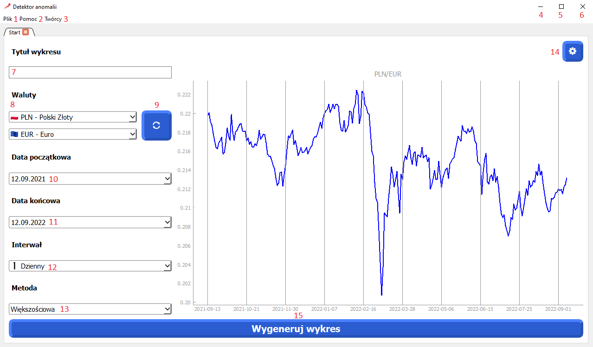
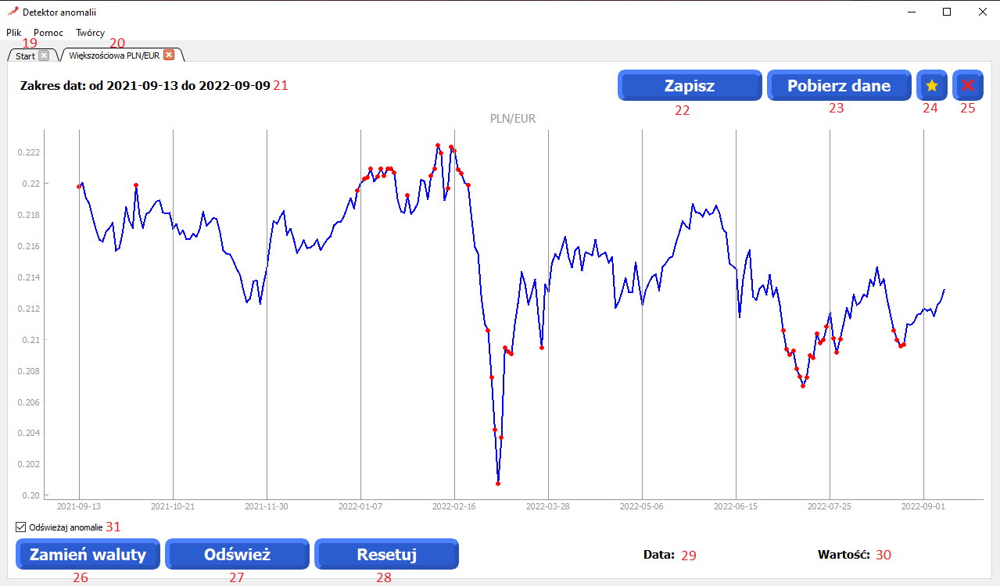

Podstawowa obsługa
1. Przycisk rozwijanej listy z opcjami: Otwórz - wczytywanie danych; Otwórz graf - wczytywanie grafu; Zamknięcie - zamknięcie aplikacji.
2. Przycisk przekierowujący na stronę "Pomoc"
3. Przycisk otwierający okno z twórcami aplikacji
4. Przycisk zminimalizowania okna aplikacji
5. Przycisk przełączenia na pełen ekran aplikacji
6. Przycisk zamknięcia aplikacji
7. Tytuł wykresu
8. Wybór walut z listy
9. Przycisk zamiany miejscami walut
10. Wybór daty początkowej z kalendarza
11. Wybór daty końcowej z kalendarza
12. Wybór interwału z listy
13. Wybór metody z listy
14. Przycisk opcji
15. Przycisk generowania wykresu

16. Przycisk zapisujący ustawienia
17. Przycisk resetujący ustawienia
18. Przycisk wyjścia z ustawień
19. Zakładka startowa
20. Zakładka z wygenerowanym wykresem
21. Podany zakres dat
22. Przycisk zapisujący wykres
23. Przycisk zapisujący dane
24. Wyróżnienie wykresu
25. Przycisk zamykający kartę
26. Przycisk zamiany miejscami walut
27. Przycisk odświeżający wykres
28. Przycisk resetujący wykres
29. Data wskazywana kursorem na grafie
30. Wartość wskazywana kursorem na grafie
31. Przycisk do odświeżania anomalii